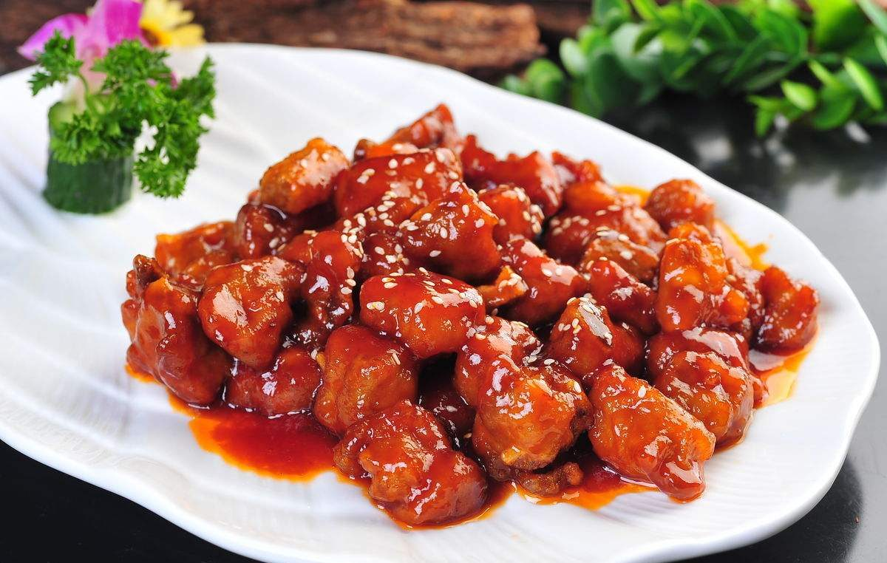
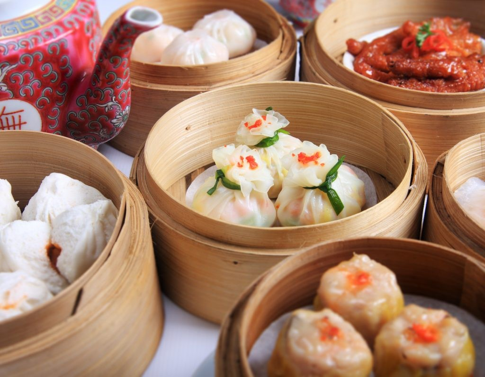
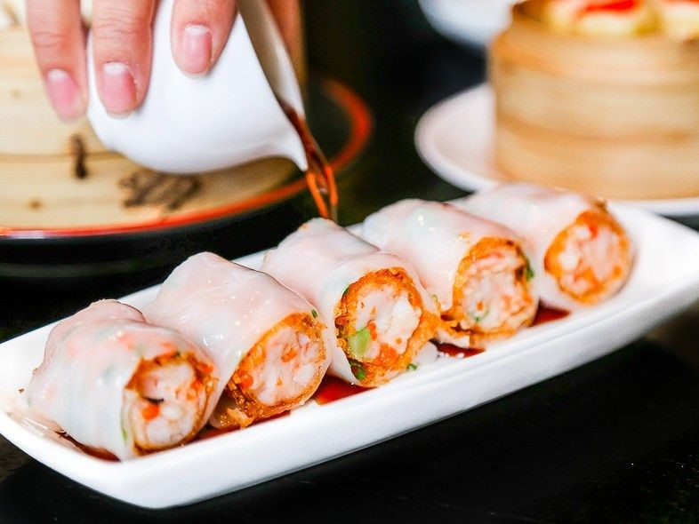
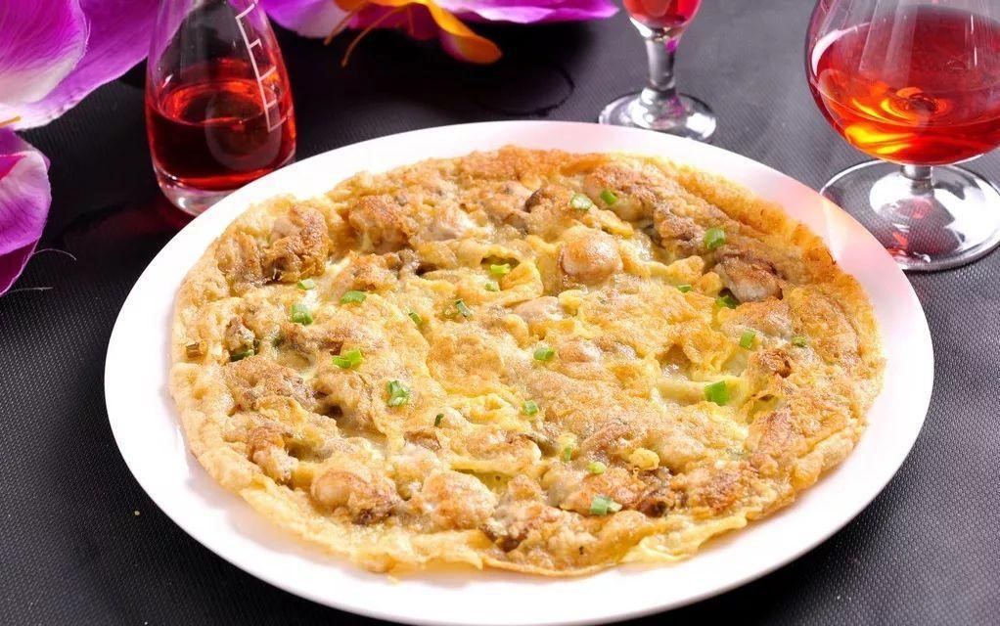
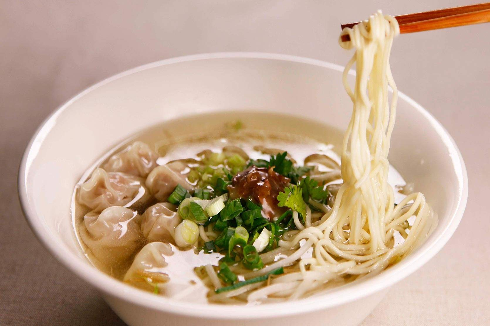
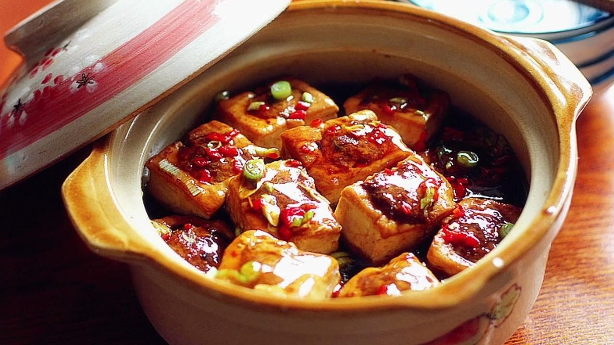
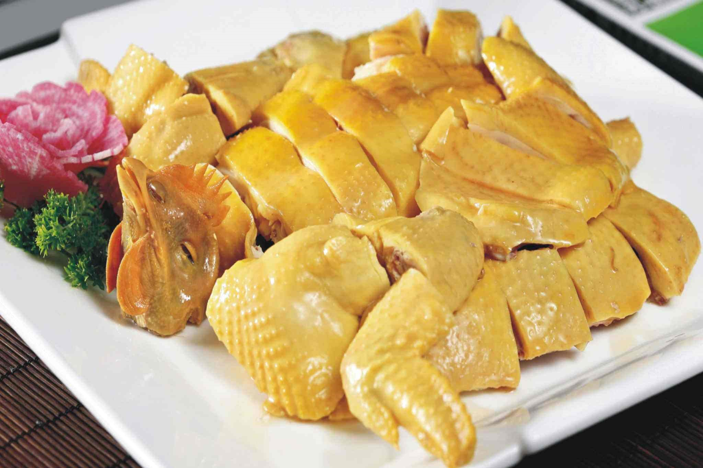
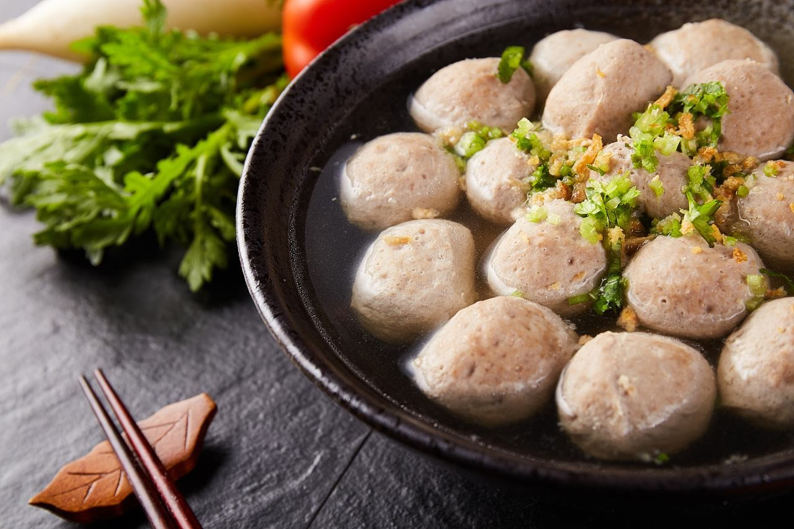
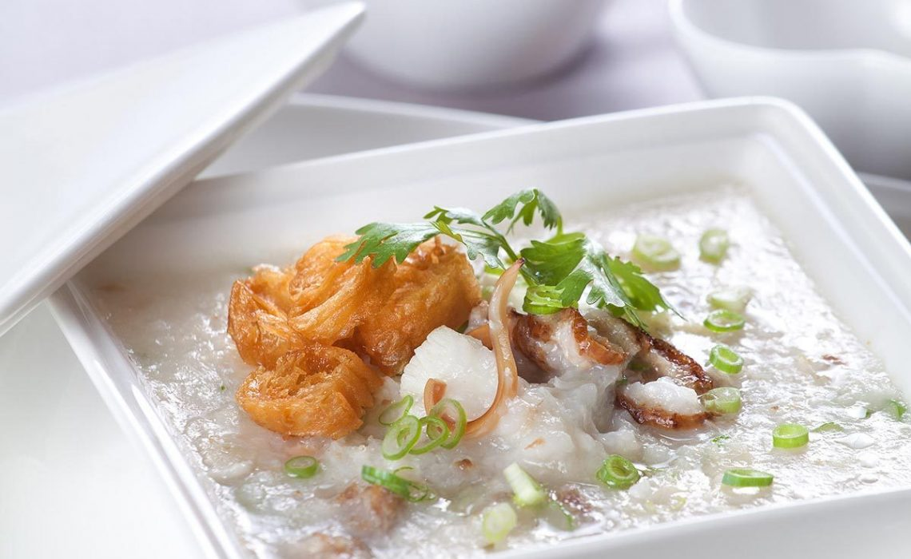

Культура Сингапура
Сингапурская культура — плавильный котел в первую очередь китайской, британской, малайской и индийской культур. Она связана с разнородным этнокультурным составом и молодостью государства.
Будучи городом-государством бизнесменов в окружении стран с дешёвой рабочей силой, Сингапур с одной стороны развивает весь европейский культурный комплекс (английский язык, европейская классическая музыка и т. д.) и представляет культуру различных этнических групп, а с другой выработал ряд специфических черт. Одна из наиболее заметных черт — это «любовь к еде» (англ. obsession with food). Еда служит основным предметом светских разговоров, фестивалей, выставок и экскурсий.
В Сингапуре живут китайцы, малайцы, индусы, и поэтому культура этого города-государства очень разнообразна. В Сингапуре отмечают индуистские, китайские и малайские праздники, начиная от Нового года и заканчивая Дипавали.
Если Вы планируете посетить Сингапур, то постарайтесь, чтобы ваша поездка совпала с каким-либо праздником: февраль - индуистский праздник Тайпусам, май - Фестиваль лодок-драконов, июль - Фестиваль Голодных Призраков, сентябрь – День Бога-обезьяны, октябрь - фестиваль Наваратири, ноябрь – праздник Императоров, декабрь – праздник Дипавали.
Кухня

Кантонская свинина
Свиные ребрышки — одно из лучших блюд кантонской кухни. Прекрасный кисло-сладкий вкус мяса может немного напоминать гобаожоу (锅包肉 guōbāoròu) — традиционный рецепт северо-восточной кухни. Однако метод приготовления выдает родину ребрышек «с потрохами»: как и многое другое, их готовят на пару.

Димсамы
Это легкая закуска, которую жители провинции едят в основном на завтрак или на полдник. Название блюда очень поэтично: дословно его можно перевести как «блюдо, трогающее сердце». Скорее всего, если вы хоть раз попробуете димсамы, то никогда не сможете забыть их нежный и сочный вкус.

Роллы из рисовой муки с начинкой
Ролл из тонкого рисового теста с начинкой из креветок, говядины, сладкой свинины барбекю или других ингредиентов также считается закуской, то есть димсамом, но заслуживают отдельного пункта в нашем списке. Есть отдельные ресторанчики и закусочные, которые специализируются только на этом блюде. Обычно роллы готовят на пару и подают с соевым соусом.

Жареные устрицы
Процесс приготовления не очень сложный: устрицы смешивают с яйцом, зеленым луком и… крахмалом из корня лотоса! Он нужен, чтобы во время жарки получилась красивая золотистая корочка. Это необычное блюдо точно достойно вашего внимания.

Лапша с вонтонами
Юньтуни (они же маленький вонтоны) — это небольшие пельмешки из тонкого теста с разнообразными начинками. В провинции Гуандун чаще всего можно встретить юньтуни с начинкой из креветок или свиного фарша, также бывают пельмешки с грибами шиитаке или со смесью из всего вышеперечисленного.

Фаршированный мясом тофу
Фаршированный мясом тофу — это обычный соевый сыр тофу в необычном исполнении. В центр каждого кусочка сыра закладывается начинка из свиного фарша со специями. Затем фаршированный тофу обжаривают до золотистой корочки, а потом варят 10-15 минут до полной готовности. Получается очень красивое, вкусное и довольно необычное блюдо.

Отварная холодная курица в соевом соусе
Курицу маринуют в специальном соусе и специях, а потом варят вместе с имбирем — вот и весь рецепт. Обычно это блюдо едят холодным, а отдельно к нему подают соус из рубленого имбиря, зеленого лука, масла и соли. На китайский Новый год такую курицу готовят и подают на стол целиком: голова и ноги птицы символизируют процветание, единение и полноту жизни. Блюдо безусловно подойдет тем, кто на диете или хочет попробовать что-то легкое, но очень вкусное.

Говяжьи фрикадельки по-чаошаньски
Еще одно диетическое блюдо кантонской кухни — фрикадельки из говядины из гуандунского региона Чаошань. Они отличаются от российского варианта: вместо обычного фарша в китайском рецепте используется мясо, измельченное в блендере до состояния пасты. Затем мясную массу перемешивают с приправами, формируют аккуратные шарики и варят. Эти фрикадельки можно добавлять в суп-лапшу, а можно есть как самостоятельное блюдо в виде шашлычка шаокао (烧烤 shāokǎo)

Отварная каша с кусочками морепродуктов и мяса
Это самая популярная в провинции Гуандун каша, ее также называют «кашей лодочника». Она больше похожа на рисовый отвар с различными добавками.
Previous
Next
Кухня Сингапура соответствует этническому разнообразию этого города-государства. Сингапурская кухня находится под влиянием малайских, китайских, индийских и даже европейских (главным образом английских) кулинарных традиций.
Туристам в Сингапуре мы рекомендуем попробовать «Peranakan popiah» (блинчики с начинкой), жареную лапшу «Hokkien», рисовую кашу «Teochew», рис с курицей «Hainanese», кантонскую жареную свинину, малайское блюдо «rending» (мясо в кокосовом маринаде), а также карри.
Самый известный алкогольный напиток в Сингапуре - коктейль «Сингапурский слинг», его придумали около 100 лет назад. В состав этого коктейля входит вишневый бренди, гренадин, лайм, ананас, и несколько ликеров.